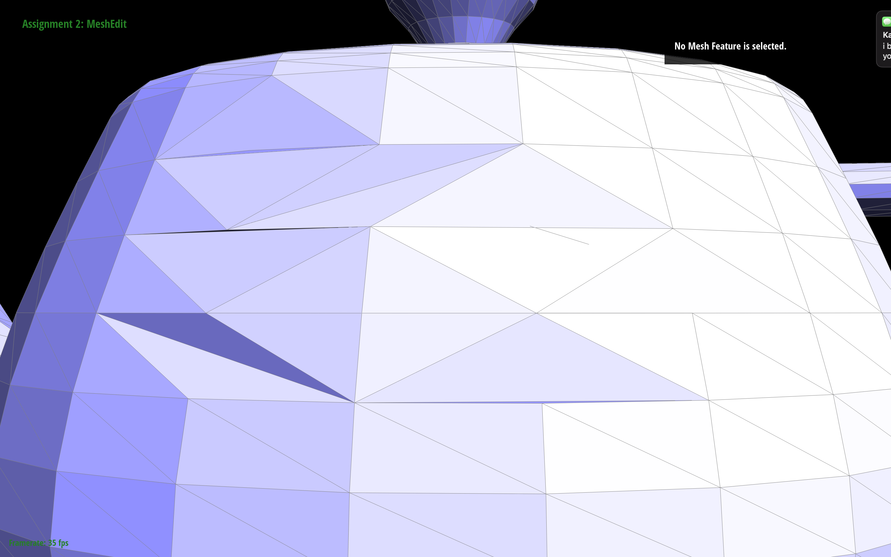
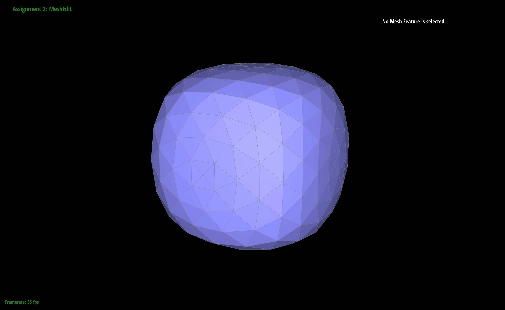

CS 184: Computer Graphics and Imaging
Project 2: Meshedit
Jonathan Kim and Steven Christopher

Overview
In this project, we implemented many operations that could be performed on a mesh. Starting from simple Bezier curves to upsampling on Bezier surfaces and meshes, we first utilized the de Casteljau algorithm to construct Bezier curves. Then, we went into applying the algorithm in surfaces and also learned how to apply shading to these surfaces in the form of area-weighted normals. When we started getting into meshes, we learned more about the halfedge data structures and its relation to vertices and edges inside a mesh. We would then go on to implement the flipping and splitting of edges that would later assist us in upsampling these meshes through subdivision. Overall, we learned more about how Bezier curves work and how altering meshes around a coarse polygon sometimes makes it smoother. We also learned the importance of creating diagrams when dealing with a lot of pointers as it allows us to track which pointer should be used where.
Part 1: Bezier Curves with 1D de Casteljau Subdivision
This portion of the project required us to implement Bezier curves by utilizing the de Casteljau algorithm.
De Casteljau's is a recursive algorithm which involves using "control points" to interpolate on (using parameter t in [0, 1]) to eventually create 1 point which lies on the bezier curve between the first and last control points. To create the curve, the procedure is repeated with all values of t between 0 and 1 on the same control points. In the image below, the six white points are the control points and and the red point is the final interpolated point using parameter t, which lies on the bezier curve (green). We implemented this by following the recursive formula provided to us in the spec for each of the points given to us.
|
First Level
|
Second Level
|
Third Level
|
|
Fourth Level
|
 Fifth Level
Fifth Level
|
Alternative t-value
|
Part 2: Bezier Curves with Separable 1D de Casteljau
This portion of the project required us to adapt what we implemented for Bezier curves to Bezier surfaces.
Before, we were given as input one vector of points. Now, we can extend the use of de Casteljau's algorithm by now handling an an nxn matrix of points (where each row acts as a vector of points as was done previously with bezier curves) and also using parameters u,v (instead of just t for the 1D case), one for each axis. We first run de Casteljau's on each row using parameter u to get interpolated points all on a bezier curve, and finally we run the algorithm again on the interpolated points using parameter v, lying on the bezier surface across these points.
Part 3: Area-Weighted Vertex Normals
This portion of the project required us to implement area-weighted normal vectors at vertices.
To iterate through the neighboring triangles, we took the iteration given to us in the halfEdgeMesh.h file around a vertex and calculated the area of the triangle if the face was not on a boundary. If it wasn't on a boundary, we took the vector positions of the three halfedges and calculated the magnitude of the cross product between the two vectors resulting from these 3 vertices. We also made sure to divide by two to find the area of a triangle and not a parallelogram. After all the neighboring area normals were added up, we unitized the vector.
|
"teapot.dae" with Default Flat Shading
|
"teapot.dae" with Phong Shading
|
Part 4: Edge Flip
|
Our Bible (source: https://cmu-graphics.github.io/Scotty3D/meshedit/local/edge_flip_diagram.png)
|
This portion of the project required us to implement a local remeshing operation on an edge, called a flip. Given a pair of triangles (a, b, c) and (c, b, d), a flip operation on their shared edge (b, c) converts the original pair into a new pair (a, d, c) and (a, b, d).
For edge flips we largely followed the diagram above. Essentially, the edge-to-be-flipped is rotated counter-clockwise (vertices are changed to be the next vertex counter-clockwise) to create the new flipped edge.This involved changing the neighbors of the halfedge (next, twin, vertex, edge, face).
Initially, we had issues with triangles being deleted, but after re-doing the setting of pointers with the diagram, we were able to create the desired result.
|
Original Unflipped Edge
|

New and Better Flipped Edge
|
Part 5: Edge Split
|
Our Bible Part 2 (Better Artist ver.)
|
This portion of the project required us to implement a local remeshing operation on an edge, called a split. Given a pair of triangles (a, b, c) and (c, b, d), a split operation on their shared edge (b, c) inserts a new vertex m at its midpoint and connects the new vertex to each opposing vertex a and d, yielding four triangles.
For edge flips we largely followed the diagram above. Essentially, what we did was split the original edge in half and create two new edges. These two new edges would require their own half edges, (h4, h5, t4, t5) and due the to split we would need another two halfedges to act as the twins of h0 and t0, (h3, t3). Then, we called the setNeighbor function on each halfedge and inputted the appropriate values based on the diagram above. We also needed to create two new faces due to the addition of two edges and put down the appropriate half edge for each vertex, edge, face involved.
Initially, we had issues with the program just instantly crashing, but after re-doing the setting of pointers with the diagram, we were able to create the desired result.
|
Original Unsplit Edges
|
New and Better Split Edges
|
Newer and Best Split and Flipped Edges
|
Part 6: Loop Subdivision for Mesh Upsampling
This portion of the project required us to convert a coarse polygon mesh into a higher resolution one for better display, more accurate simulation, and etc using an upsampling algorithm, loop subdivision, that nicely interpolates or approximates the original mesh data.
Without pre-splitting, using loop subdivision on the cube yields an asymmetric mesh that is a bit pointy still. As discussed before, if we pre-process the mesh before subdividing it, we can cause these sharp corners and edges to be closer to vertices and be less prominent in the resulting mesh after loop subdivision.
Therefore, in order to create this smoother mesh in the end, we want to pre-split the edges on the cube, as although it looks symmetric, the faces of the triangles and its edges are not entirely symmetrical if one were to "disassemble" the faces of the cube and flatten it out. To do this, we simply split the edges on each face of the cube to be an X instead of a \ edge or a / edge in the middle of the face, creating an overall symmetrical cube. These new Xs create vertices which will be the new, closer neighboring vertices of the sharp corners, resulting in these corners being more rounded out since these new vertices will have greater weight when dictating the new position of the old vertex (corner).
We can see that on using loop subdivision on this pre-processed cube, that we converge to this rounder "cube" mesh faster than the unprocessed cube. Additionally, there are no sides which are more pointy than the others–in fact there is no pointy-ness at all on this resulting mesh and the final shape seems to retain the symmetrical property of the original cube.
|
Torus Boi
|
Less Torusy Boi
|
Lesser Torusy Boi
|
Donut Boi
|
Pre-splitting
|
Cube
|
 Not a Cube
Not a Cube
|
Smol Cube
|
|
Oblong Many Faced Cube
|
 Pointier Than Post-splitting Roundest Cube
Pointier Than Post-splitting Roundest Cube
|
Post-splitting
|
Cube
|
Round Cube
|

Rounder Cube
|
Roundest Cube
|